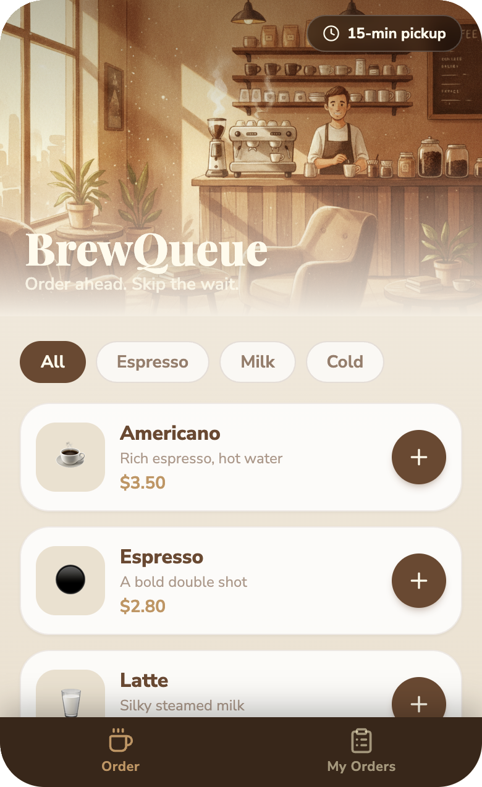

No code. No buzzwords. Just 40 battle-tested digital setups pulled from real shop floors.

← Swipe or use arrows →
Hand booking, phone tags, and spreadsheet hunts become one-tap workflows. You get your time back.
Ditch paper orders, WeChat chaos, and missed messages. Orders and customer info live in one place.
Booking slots, member tracking, and restock alerts help you turn more customers and keep them coming back.
Pick your industry. Find a case that looks like yours. Copy the setup.
Rush hour meant a line out the door — and customers leaving for the shop next door. With BrewQueue, they pick a pickup slot, order ahead, and walk in to grab.
Lost orders, long lines, and regulars walking away to the competition.
15-minute pickup slots. Orders ready when the customer arrives. Kitchen preps to a queue.
Find a case that matches your shop. See the problem it solves and the result it delivers.
Each case includes an English prompt. One click copies it to your clipboard.
Paste the prompt into whacka. It generates a working mini-app. Change the name and colors. Done.
Coffee shop, nail studio, gym, convenience store — it doesn't matter. Pick one case and try it. The cost of experimenting is basically zero.
Browse the cases →